Aquella vez · Manual de español
Unidad 3
La rutina diaria
¿A qué hora te levantas?
EjercicioAprende los verbos reflexivos y relaciónalos con los infinitivos de la lista
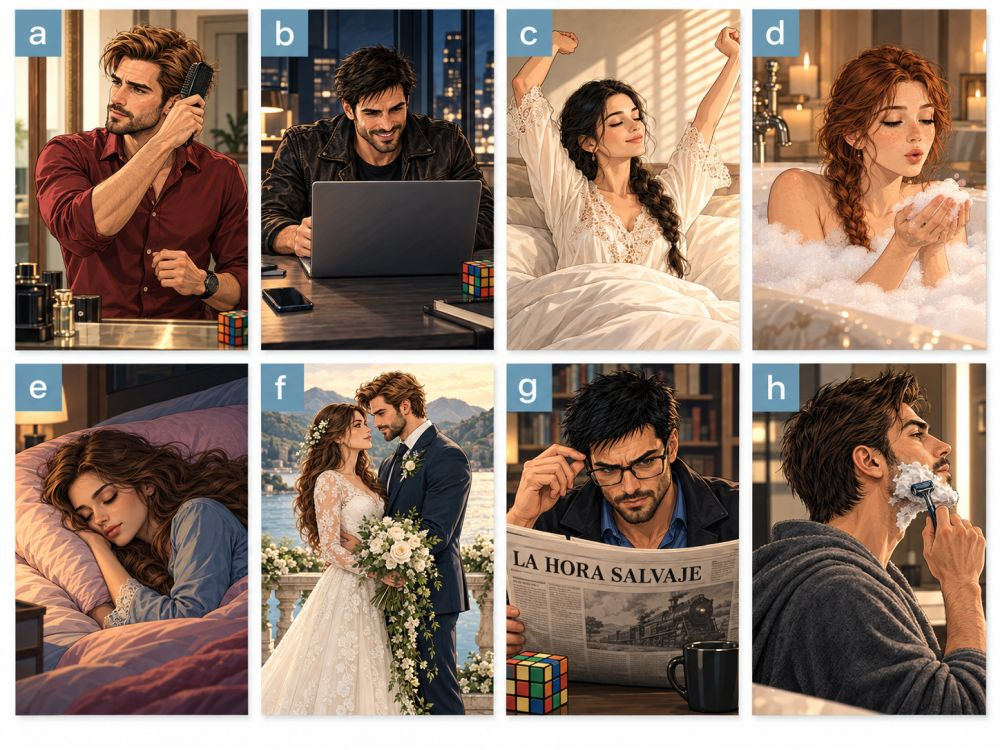
- a) afeitarse
- b) despertarse
- c) casarse
- d) concentrarse
- e) bañarse
- f) peinarse
- g) dormirse
- h) alegrarse
EjercicioCompleta con los verbos
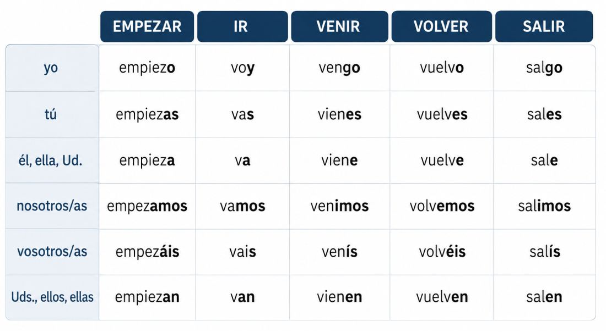
Yo (venir) a clase todos los días.
Nosotros (empezar) la película a las ocho.
¿Tú (volver) a casa después del trabajo?
Mis amigos (salir) muy temprano los sábados.
Marta y yo (ir) al supermercado juntos.
¿Vosotros (venir) mañana a la fiesta?
El profesor (empezar) la lección con una pregunta.
Tú (salir) del colegio a las cuatro.
Ellos (volver) del viaje muy cansados.
Yo (ir) al parque con mi perro.
Nosotros (venir) en autobús.
¿Ustedes (empezar) ahora el ejercicio?
Ana (salir) con sus amigas esta noche.
Vosotros (volver) muy tarde los domingos.
Mi hermano (ir) al gimnasio después de trabajar.
Lee la entrevista a Roberto
Gramática: verbos reflexivos; ir, venir y salirPeriodista¿A qué hora se levanta?
RobertoMe levanto a las siete.
Periodista¿Qué desayuna?
RobertoDesayuno pan tostado con manteca y dulce de leche.
Periodista¿A qué hora sale de casa?
RobertoSalgo a las ocho.
Periodista¿A qué hora empieza a trabajar?
RobertoEmpiezo a trabajar a las nueve.
Periodista¿Cuándo vuelve a casa?
RobertoVuelvo a casa por la tarde.
Periodista¿Qué hace por la noche?
RobertoPor la noche paso el tiempo con mi mujer. Leemos libros sobre misterios, cenamos y nos enamoramos cada día más.
PeriodistaRoberto, usted es un romántico. Gracias por la entrevista.
RobertoA usted.
EjercicioContesta las preguntas
- ¿A qué hora se levanta Roberto?
- ¿Qué desayuna Roberto?
- ¿Roberto desayuna café con medialunas?
- ¿A qué hora sale de casa?
- ¿A qué hora empieza a trabajar?
- ¿Cuándo vuelve a casa?
- ¿Qué hace Roberto por la noche?
- ¿Con quién pasa el tiempo Roberto por la noche?
- ¿Qué libros leen Roberto y su mujer?
- ¿Por qué el periodista dice que Roberto es un romántico?
EjercicioContesta verdadero o falso
- Roberto se levanta a las siete.
- Roberto desayuna cereal con leche.
- Roberto sale de casa a las ocho.
- Roberto empieza a trabajar a las diez.
- Roberto vuelve a casa por la tarde.
- Por la noche Roberto mira películas de terror.
- Roberto pasa el tiempo con su mujer.
- Roberto y su mujer leen libros sobre misterios.
EjercicioExplica con tus propias palabras qué hace Roberto en cada imagen
EjercicioCuenta un poco qué haces un día normal de tu vida
¡Vamos!
Aprende las preposiciones
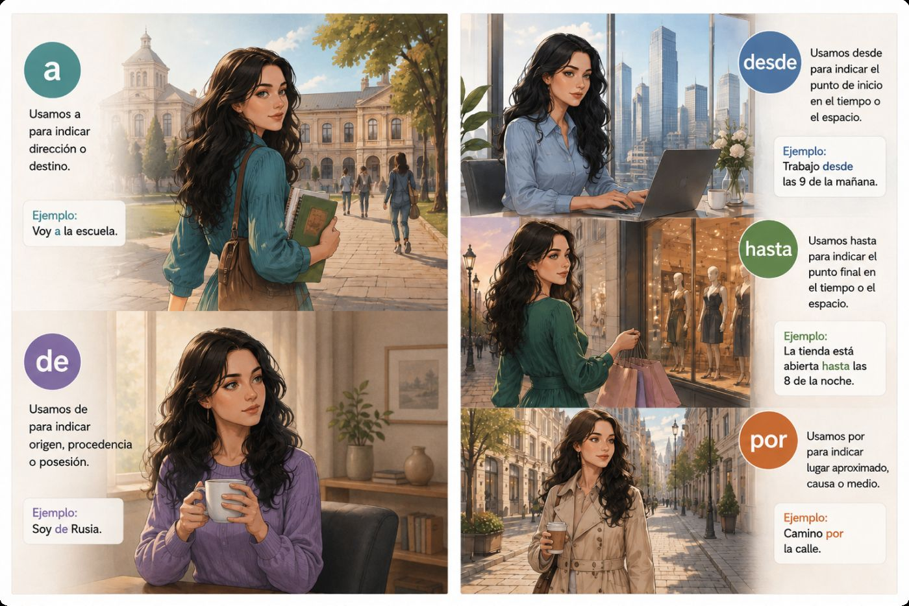
EjercicioCompleta con a, de, desde, hasta o por
Soy México.
Voy la playa.
Camino el parque.
Trabajo las 9 las 5.
Hablamos teléfono.
El autobús sale la estación.
Estudio español mi viaje.
La tienda está abierta las 10 de la noche.
EjercicioCompleta con las preposiciones correctas el horario de los establecimientos
El banco abre las 9 de la mañana las 2 de la tarde.
La farmacia está abierta las 8:30 las 9 de la noche.
El restaurante abre las 12 del mediodía.
Por la tarde, el restaurante cierra las 16:00 y vuelve a abrir las 20:00.
El banco no abre por la tarde. Cierra las 2.
EjercicioUn día normal de Natalia
Completa con: de, a, por, desde, hasta, que
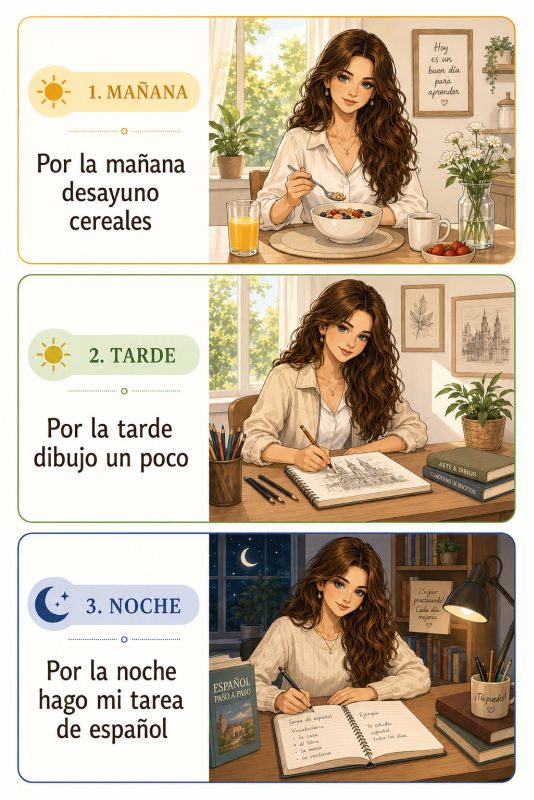
Natalia es artista y diseñadora. Ella trabaja casa y es muy aplicada. Su día empieza la mañana. Natalia se levanta temprano, abre la ventana y desayuna cereales con fruta. Después prepara un café y mira su agenda.
la mañana trabaja en sus diseños. Dibuja, usa la computadora y busca ideas nuevas. Natalia es creativa, pero también es muy organizada. Le gusta trabajar con calma y hacer todo con cuidado.
la tarde almuerza y descansa un poco. Después sigue dibujando. veces hace bocetos en su cuaderno. También prepara proyectos para sus clientes. Su trabajo es importante para ella.
Natalia trabaja las nueve las cinco, pero a veces continúa un poco más porque quiere terminar bien sus proyectos.
la noche Natalia estudia español. Lee textos simples, escribe frases nuevas y hace su tarea. Ella quiere hablar español cada día mejor. Natalia piensa estudiar idiomas es muy importante.
Natalia tiene un día tranquilo, creativo y productivo. Trabaja mucho, estudia y siempre aprende algo nuevo.
EjercicioLee la historieta y contesta las preguntas
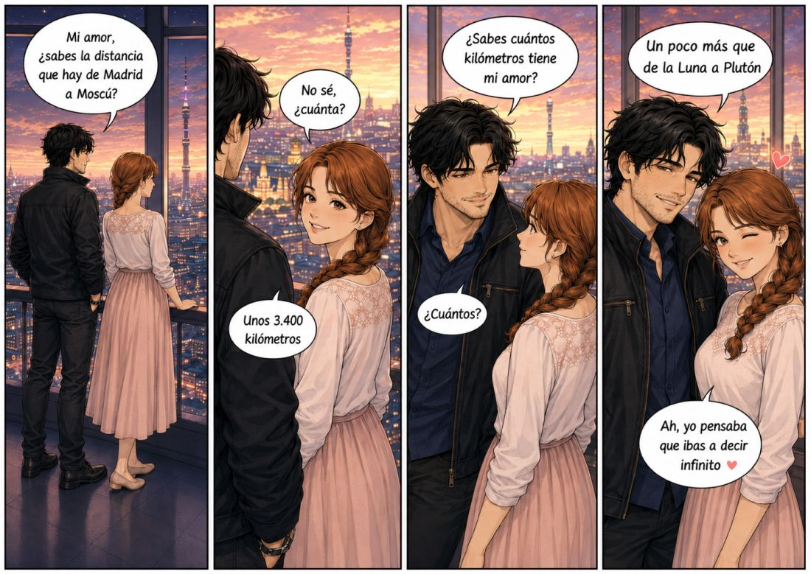
- ¿Dónde están los personajes en el cómic?
- ¿Qué ciudad están viendo desde la torre?
- ¿Qué pregunta le hace él a ella en el primer cuadro?
- ¿Qué responde ella cuando él le pregunta por la distancia entre Madrid y Moscú?
- ¿Cuántos kilómetros dice él que hay aproximadamente entre Madrid y Moscú?
- ¿Qué segunda pregunta le hace él a ella?
EjercicioEscribe cinco frases usando las preposiciones que has aprendido
Un día típico
Ejercicio1. Lee y contesta verdadero o falso
Texto 1: María
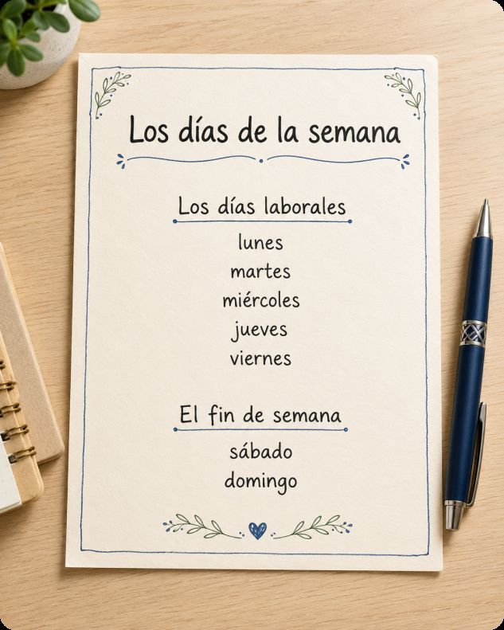
María es docente universitaria. Trabaja en una universidad y enseña periodismo. Se levanta muy temprano, desayuna y va a la facultad en autobús. Durante el día tiene muchas clases y reuniones, por eso vive muy ocupada. Empieza a trabajar a las nueve de la mañana.
A la una almuerza y después trabaja hasta las seis de la tarde. Entonces vuelve a su casa. Por la noche cena, se acuesta a leer y se duerme.
Los fines de semana se junta con sus amigas. A veces va al club literario a escuchar poesía o va al museo. Nunca va a bailar, porque prefiere actividades culturales.
Texto 2: Juan
Juan es pintor. Tiene una vida bastante tranquila. Se levanta muy tarde, a eso de las doce del mediodía. Desayuna, lee las noticias y vuelve a la cama. Duerme un poco más.
Se levanta otra vez a las seis de la tarde. Come algo y sale a la calle para dar un paseo. Vuelve a casa y se acuesta a dormir.
Se despierta a las doce de la noche. Entonces aparece la inspiración y pinta hasta las cinco de la mañana. En ese momento se cansa y va a dormir.
Los fines de semana no trabaja porque son sus días de descanso.
- María vive cerca de su trabajo.
- María va a bailar los fines de semana.
- Juan trabaja en la calle.
- Juan pasa mucho tiempo en su casa.
¿El lunes o los lunes?
En español usamos el o los con los días de la semana.
El lunes: usamos el lunes cuando hablamos de un lunes específico.
El lunes tengo clase de español. = Este lunes / un lunes concreto tengo clase.
El lunes voy al médico. = Tengo una cita un lunes específico.
El sábado trabajo. = Trabajo este sábado o un sábado concreto.
Los lunes: usamos los lunes cuando hablamos de una rutina o de algo que pasa todos los lunes.
Los lunes tengo clase de español. = Tengo clase todos los lunes.
Los lunes voy al gimnasio. = Voy al gimnasio cada lunes.
Los sábados no trabajo. = No trabajo ningún sábado / normalmente no trabajo los sábados.
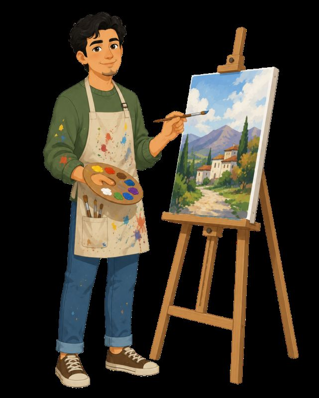
El día de Robert
Lee el texto y contesta las preguntas.
Robert se levanta a las siete de la mañana.
Primero toma café. Le gusta tomar café tranquilo.
Después mira su fortaleza. La fortaleza es grande y resistente.
Robert está contento. Él está orgulloso de su fortaleza.
Por la mañana camina por la fortaleza. Mira las torres, las paredes y la puerta grande.
También habla con la gente. Pregunta: —¿Todo bien?
La gente trabaja. Algunos preparan comida. Otros arreglan las paredes.
Robert piensa: —Esta fortaleza es nuestro hogar.
Después Robert vuelve a tomar café. Mira el sol y sonríe.
Él sabe que la vida no es fácil. Pero también sabe que su fortaleza protege a muchas personas.
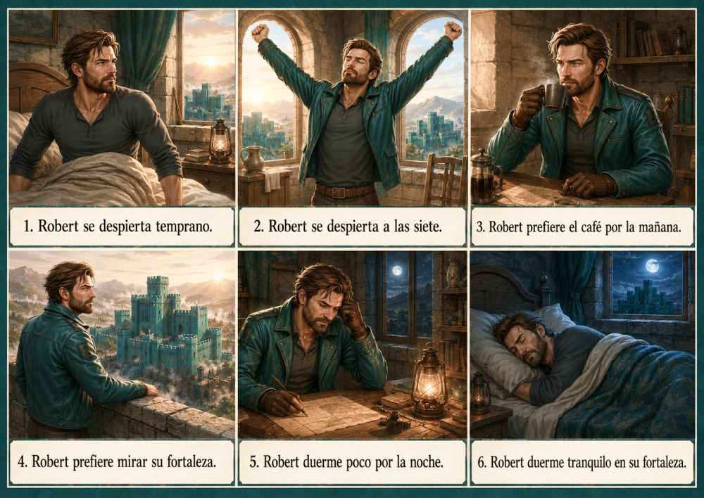
EjercicioPreguntas
- ¿Cómo se llama el hombre?
- ¿A qué hora se despierta Robert?
- ¿Robert se despierta temprano o tarde?
- ¿Qué prefiere tomar Robert por la mañana?
- ¿Qué mira Robert por la mañana?
- ¿De qué color es la fortaleza?
- ¿Robert duerme mucho o poco por la noche?
- ¿Dónde duerme Robert tranquilo?
EjercicioEscribe cinco frases usando estos verbos
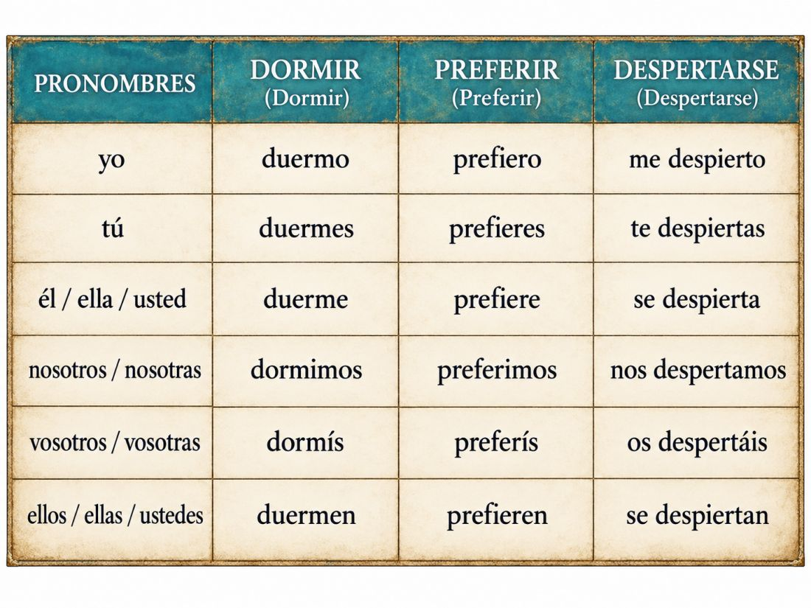
Gramática
Los verbos reflexivos
Los verbos reflexivos expresan una acción que una persona hace sobre sí misma. Por ejemplo:
Yo me despierto. La persona que hace la acción soy yo, y la acción afecta a mí.
Natalia se peina. Natalia hace la acción y la acción afecta a Natalia.
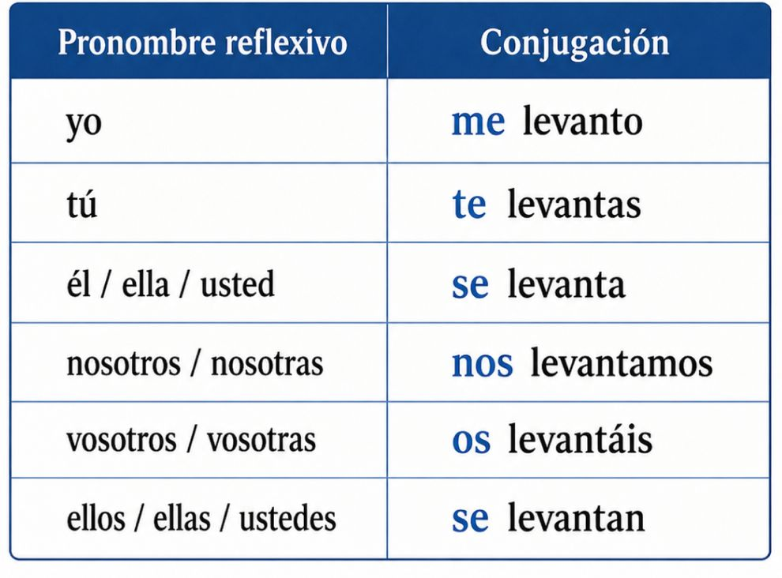
Reflexivo o no reflexivo
Algunos verbos pueden usarse con forma reflexiva o no reflexiva.
| Verbo | Ejemplo |
|---|---|
| Lavar | Yo lavo la ropa. |
| Lavarse | Yo me lavo las manos. |
| Peinar | La madre peina a su hija. |
| Peinarse | Natalia se peina. |
Con infinitivo: cuando hay dos verbos juntos, el pronombre puede ir antes del primer verbo o unido al infinitivo. Las dos formas son correctas:
Me quiero levantar temprano. / Quiero levantarme temprano.
Natalia se va a duchar. / Natalia va a ducharse.
Resumen: los verbos reflexivos llevan un pronombre: me, te, se, nos, os, se. Se usan cuando la persona hace una acción sobre sí misma.
Me levanto. · Te duchas. · Se afeita. · Nos acostamos.
Ejercicio1. Completa con el pronombre reflexivo correcto
Completa las frases con: me, te, se, nos, os, se.
Yo levanto a las siete.
Tú duchas por la mañana.
Ella peina antes de salir.
Nosotros acostamos temprano.
Vosotros vestís rápido.
Ellos lavan las manos.
Ejercicio2. Conjuga el verbo entre paréntesis
Completa las frases con la forma correcta del verbo reflexivo.
Yo a las ocho. (despertarse)
Tú los dientes después de comer. (lavarse)
Marcos muy elegante. (vestirse)
Nosotros en el espejo. (mirarse)
Ustedes tarde los sábados. (levantarse)
Natalia antes de dormir. (peinarse)
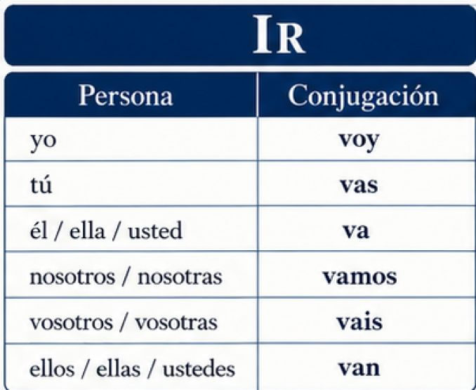
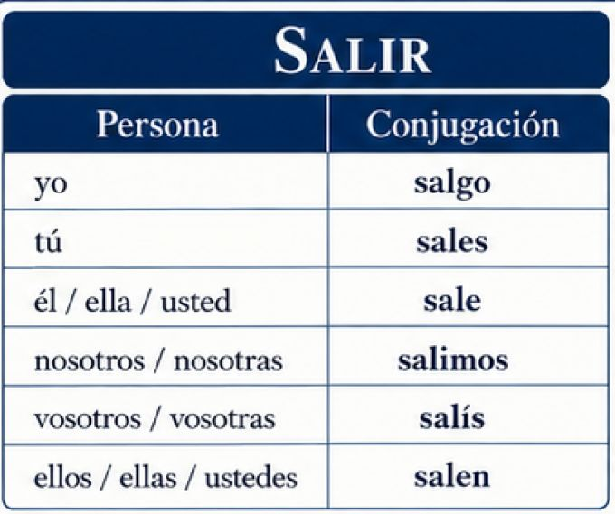
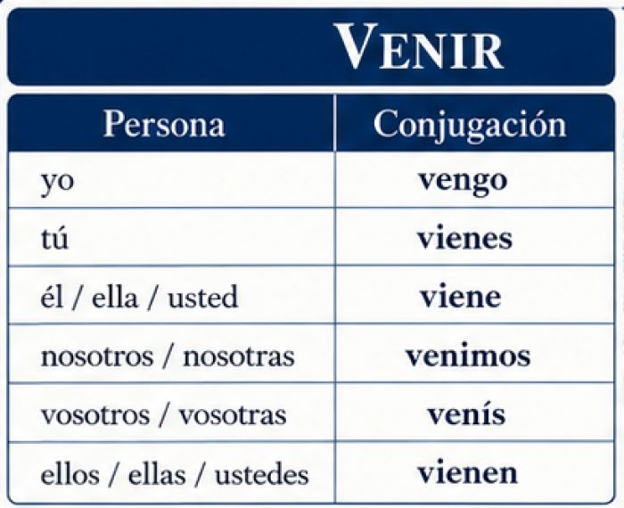
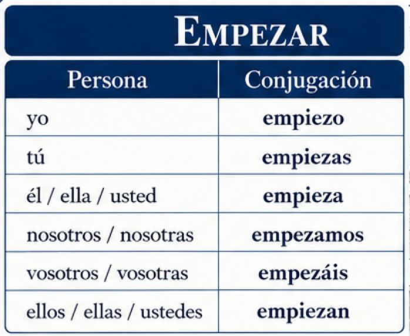
IR + A
Usamos ir + a para hablar de un destino.
Voy a la escuela. · Vas al parque. · Vamos a casa.
Atención: a + el = al
Voy a el cine. ✗
Voy al cine. ✓
SALIR + DE
Usamos salir + de para hablar del lugar que dejamos.
Salgo de casa. · Luis sale del trabajo. · Nosotros salimos de la escuela.
Atención: de + el = del
Salgo de el hotel. ✗
Salgo del hotel. ✓
VENIR + DE
Usamos venir + de para hablar del origen o del lugar de procedencia.
Vengo de casa. · Natalia viene de España. · Ellos vienen del trabajo.
Atención: de + el = del
Vengo de el colegio. ✗
Vengo del colegio. ✓
SALIR + A + INFINITIVO
Usamos salir + a + infinitivo para hablar de una actividad fuera de casa.
Salgo a caminar. · Salimos a comer. · Ellos salen a bailar.
Estructura: salir + a + verbo en infinitivo
EjercicioCompleta las frases con: a, al, de, del.
1. Yo voy la escuela.
2. Tú vas parque.
3. Natalia viene España.
4. Luis sale trabajo.
5. Nosotros vamos cine.
6. Ellos vienen hotel.
7. Yo salgo casa.
8. Ustedes van supermercado.
9. Marcos viene centro.
10. Nosotros salimos colegio.
EjercicioCompleta las frases con el verbo correcto: ir, venir, salir o empezar.
1. Yo a la escuela.
2. Tú de casa.
3. Natalia del trabajo.
4. Nosotros a caminar.
5. La clase a las ocho.
6. Ellos del cine.
7. Ustedes al supermercado.
8. Yo a estudiar.
9. Marcos de España.
10. Vosotros a comer.
Cultura
Los horarios de comidas en el mundo hispanohablante
En los países donde se habla español, la gente come a horas diferentes.
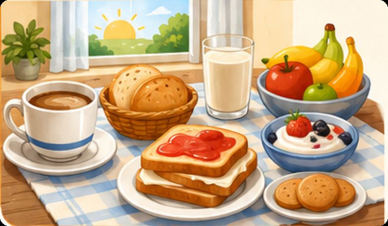
El desayuno
El desayuno es la primera comida del día. Los hispanohablantes desayunan entre las 7 y las 9 de la mañana. En el desayuno toman café con leche, pan, tostadas o galletas. En algunos países también comen fruta o yogur.
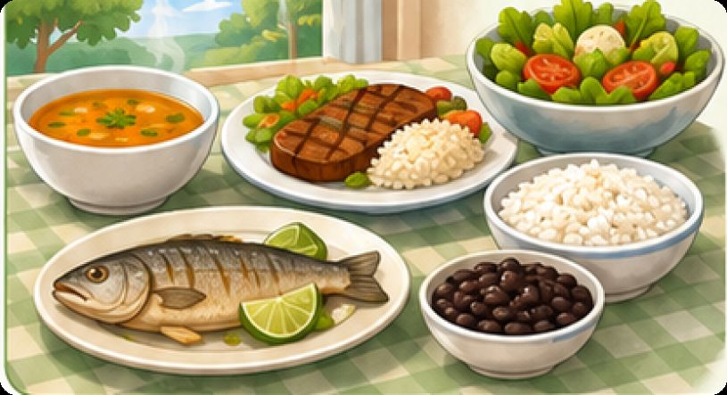
El almuerzo
El almuerzo es la comida más importante del día. Los hispanohablantes almuerzan entre las 12 y las 3 de la tarde. En España, la gente almuerza tarde, a las 2 o a las 3 de la tarde. En México, Argentina y Colombia, la gente almuerza más temprano, entre las 12 y las 2. En el almuerzo se come sopa, carne, pescado, arroz, frijoles o ensalada.
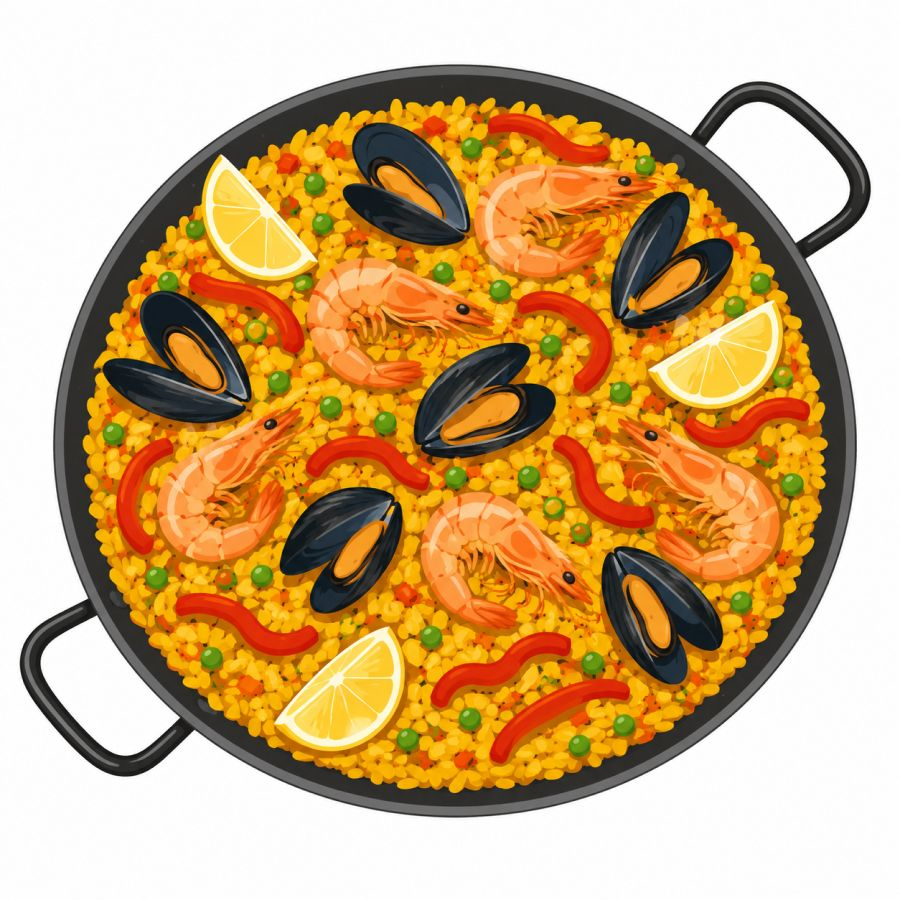
La merienda (en algunos países)
En España, Argentina y Uruguay, la gente hace la merienda entre las 5 y las 7 de la tarde. La merienda es una comida pequeña. Toman un café, un té, una leche con galletas o un bocadillo. En otros países, como México o Colombia, no es común merendar.
La cena
La cena es la última comida del día. Los hispanohablantes cenan entre las 8 y las 11 de la noche. En España, la gente cena muy tarde, a las 9 o a las 10 de la noche. En Hispanoamérica, la gente cena más temprano, entre las 7 y las 9 de la noche. En la cena se come algo ligero: una sopa, una ensalada, un sándwich o lo que sobró del almuerzo.
EjercicioPreguntas
- ¿A qué hora desayunas tú?
- ¿A qué hora almuerzas?
- ¿Cenas temprano o tarde?
- ¿En tu país hay merienda?
Historieta
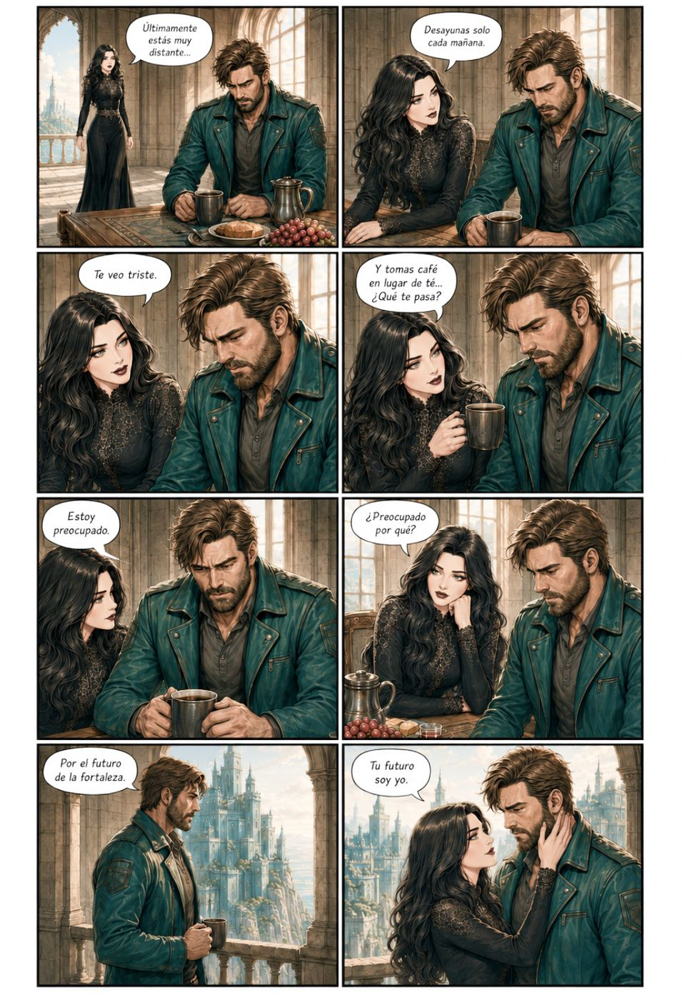
Notas importantes
Usted y ustedes
1. Usted
Usted significa "tú", pero de una forma más formal. Usamos usted con:
- una persona mayor;
- un profesor o una profesora;
- una persona que no conocemos bien;
- en situaciones formales: en una oficina, en una tienda, en una entrevista.
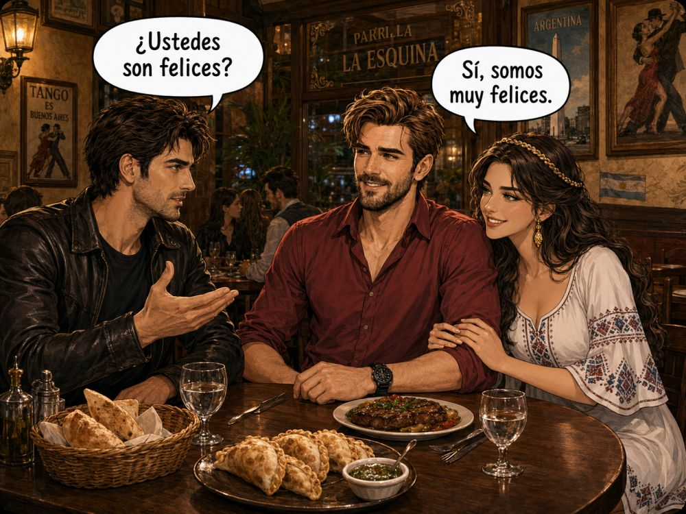
2. Ustedes
Ustedes significa "vosotros" o "ustedes" para hablar con dos o más personas. En muchos países de Hispanoamérica, ustedes se usa siempre para hablar con varias personas.
Ejercicio3. Mini práctica. Completa con usted o ustedes.

¿Cómo se llama ?
¿De dónde son ?
¿Habla italiano?
¿Tienen el cuaderno?
Mucho gusto. ¿Es la profesora?